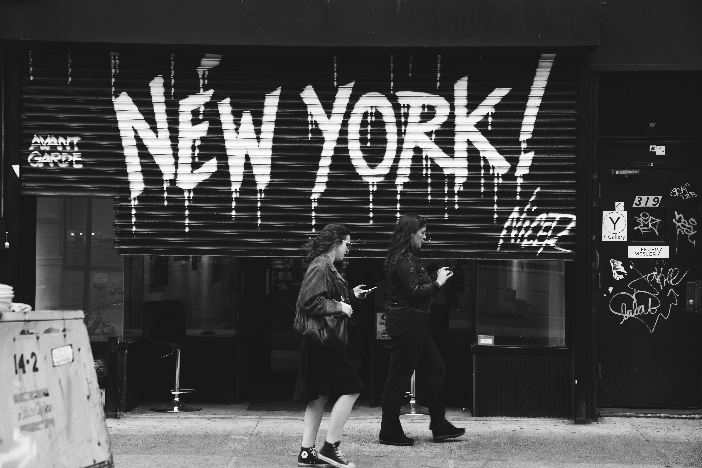

About our project
In our project, we explore and analyze the Motor Vehicle Collisions dataset provided by the New York Police Department (NYPD). This comprehensive dataset comprises 2.03 million rows, each representing a motor vehicle collision, and includes 29 columns such as CRASH DATE, CRASH TIME, BOROUGH, ZIP CODE, LATITUDE, LONGITUDE, and various other details about the incidents. The primary aim of the project is to uncover insights and patterns within the data. I address key problem statements, such as identifying locations with the highest and lowest number of collisions, determining areas where the most and least fatalities and injuries occur, and understanding the types of vehicles and contributing factors involved in collisions. Additionally, the project delves into time frames when crashes are most and least likely to happen. Through data visualization, particularly on a map of New York City, I aim to provide a clear representation of the spatial distribution of collisions, offering a visual perspective on the dataset's patterns and trends. The analysis of this Motor Vehicle Collisions dataset serves to enhance our understanding of traffic incidents in NYC, contributing valuable insights for future safety measures and urban planning.

Project Aim
The primary aim of this project is to conduct a comprehensive analysis of the Motor Vehicle Collisions dataset provided by the New York Police Department (NYPD).o We have collected a dataset of motor vehicle collisions occurred in New York City. The detail description of the dataset is given below We have implemented a python script for time series forecasting using the Seasonal Auto Regressive Integrated Moving Average (SARIMA) model.

making of website and technology used
We have collected a dataset of motor vehicle collisions occurred in New York City. The detail description of the dataset is given below.
After downloading the dataset, we imported this data into Google Colab (Python Notebook) and implemented some pre-processing operations
on the dataset.
Then, this new dataset is imported into MySQL Database Server.
Node.js was used to run the back-end server.
HTML, CSS, and JavaScript was used for the front-end.
Implemented SARIMA (Seasonal Auto Regressive Integrated Moving Average) model for time series analysis and forecasting. This can be used to predict future accident counts.
Hosted our website on Google Cloud